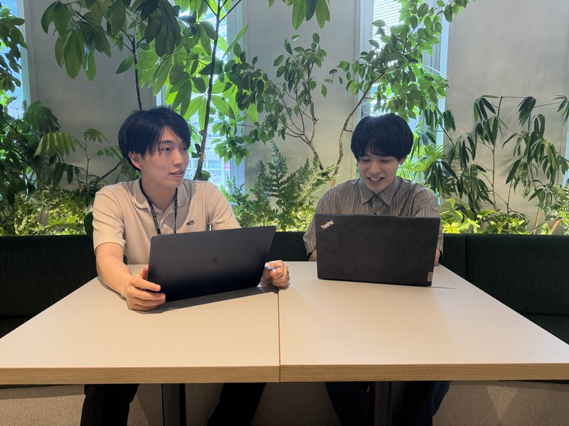

INTRODUCTION
広告代理事業をルーツに持ちながら、人材紹介事業へと大きく舵を切った株式会社Smart Force様。正社員・インターンを含む8名体制で未経験領域を中心にキャリア支援を展開しています。自社のSNS広告運用やIndeed、複数の送客サービスを並行活用する中で、「日次の面談数が安定しない」「決定率の高い集客チャネルを見つけたい」という課題を抱えていました。「求職者送客の窓口」導入後は成約率30%・ROAS 400%を達成し、集客基盤の安定化に成功。今回は、その導入背景と高い成約率を出すコツについて、マーケティング担当の山田様とキャリアアドバイザーの鈴木様に詳しくお話を伺いました。
人材紹介事業にて、「求職者送客の窓口」導入前に一番困っていたことは何でしたか？
一番の課題は、日次の面談数が安定しなかったことです。もともと複数の送客サービスやIndeedを使って集客していたのですが、自社の流入だけだと面談数にムラが出てしまい、CA（キャリアアドバイザー）のスケジュールが読めない状態が続いていました。
加えて、既存の送客サービスの決定率にも不安を感じていて、より費用対効果の高い集客チャネルを探す必要がありました。広告代理事業がルーツの会社なので自社でSNS広告の出稿もやっているのですが、人材紹介領域の広告運用はまた別のノウハウが必要で、なかなかCPAが安定しない状況でしたね。
「求職者送客の窓口」導入に際して比較していた他の選択肢は何ですか？
導入前から複数の送客サービスを併用していました。ミドル層に強いサービスもあって、大卒3〜5年目くらいの方が多く来てくださるので、相性は良いと感じていました。ただ、未経験のポテンシャル層を中心に決定数を伸ばしていきたいという事業方針の中で、そこにフィットする送客パートナーをもう一社探していたんです。
「求職者送客の窓口」の導入を決めた"決め手"は何でしたか？
送客サービスの中でも、SNSを活用した独自の集客チャネルを持っている点と、決定率の高さをアピールされていた点に惹かれました。既存の送客サービスとはリーチできる求職者層が異なるのではないかという期待もあり、導入を決めました。
「求職者送客の窓口」導入後の率直なご感想を教えてください
いい意味でのギャップがありました。正直、最初は「どれくらい面談が入ってくるのかな」と半信半疑だったのですが、想定よりもガンガン面談が入ってくるという感じで。日次の面談数が安定し始めたことで、CAのスケジュール管理もしやすくなりましたし、事業計画が立てやすくなったのは大きいですね。
各CAが月40件前後の面談をこなせるようになり、チーム全体として安定的に稼働できる体制が整いました。

導入において最初につまずいた点はありますか？
つまずいたというほどではないのですが、事前に共有いただくカルテ（求職者情報のメモ）の情報量が多くて、最初は面談直前に全部を把握するのに少し時間がかかりました。僕らは大体面談の5〜10分前にカルテを確認するスタイルなので、「何年経験していて」「希望職種は固まっているのか」といったポイントをパッと掴みたいんですよね。慣れてくると読み方のコツがわかってくるので、今は問題なく運用できています。
「求職者送客の窓口」が貴社の期待を超えた点があれば教えてください
成約率30%、ROAS 400%という数字が出たのは期待以上でした。他の送客サービスと比較しても高い水準ですし、導入して間もない段階でこの数字が出せたのは驚きました。
もうひとつは、求職者様の転職意欲の高さです。事前にしっかりとヒアリングされた状態で送客されてくるので、初回面談での「握り」がスムーズなんです。他の経路だと面談してから「やっぱり考え直します」という方も一定数いるのですが、貴社経由の方はそういったケースが少なく、本気度の高い面談ができています。
本サービスをうまく活用するための工夫を教えてください
複数社に送客される環境なので、他社エージェントとの差別化は常に意識しています。僕らが一番大事にしているのは「スピード感」と「新しい情報の提供」の2つです。
まずスピード感で言うと、面談後すぐに求人をご案内するようにしています。他社だと「1週間後にまた面談して、その時に求人をご案内しますね」というケースもあるのですが、僕らは翌日、早ければ当日中に求人をお送りします。1人あたり平均10件前後の求人をご案内しているので、選択肢の幅としても満足いただけていると感じています。
もうひとつの「新しい情報の提供」は、他のエージェントがすでに提案している職種を把握した上で、見落とされている選択肢を提示することです。例えば事務職で考えている方に対して「施工管理」や「営業」といった別のキャリアパスも提案するなど、常に求職者様が持っていない視点を提供するようにしています。
初回面談で特に意識していることはありますか？
ゴールは「関係構築」と「方向性を握ること」の2つです。特に意識しているのは、求職者様の強みを見つけて、それを活かせるキャリアのイメージを一緒に作ることですね。話すことが得意な方であれば「その強みは営業でこう活きますよ」とシンプルに伝える。基本的なことですが、これが結局一番効くんです。
貴社経由の求職者様は、事前ヒアリングの段階で転職意欲や希望条件がある程度整理されているので、初回からぐっと深い話ができるのはありがたいですね。他の経路だと、まず温度感の確認から始めなければならないことも多いので。
他社の送客サービスと比べて差があると感じる点があれば教えてください
未経験のポテンシャル層に対するリーチ力と、求職者の事前温度感の高さが一番の差だと思います。ミドル層の集客に強いサービスもあり、それぞれ良さがあるのですが、僕らの事業の本流である未経験層に対しては貴社が最もフィットしていると感じています。